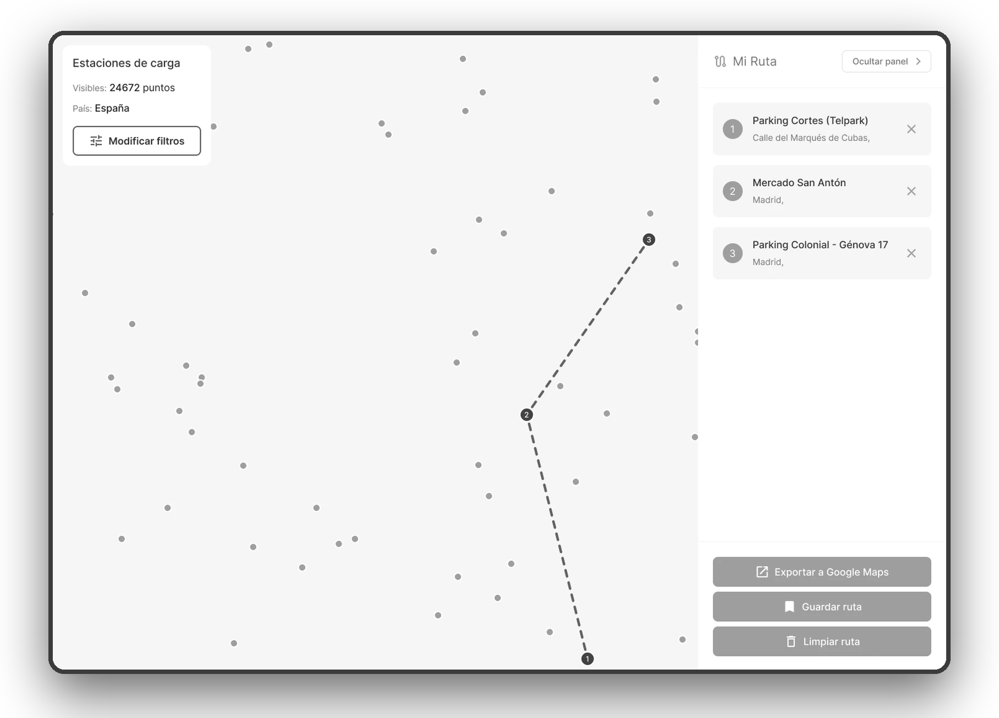
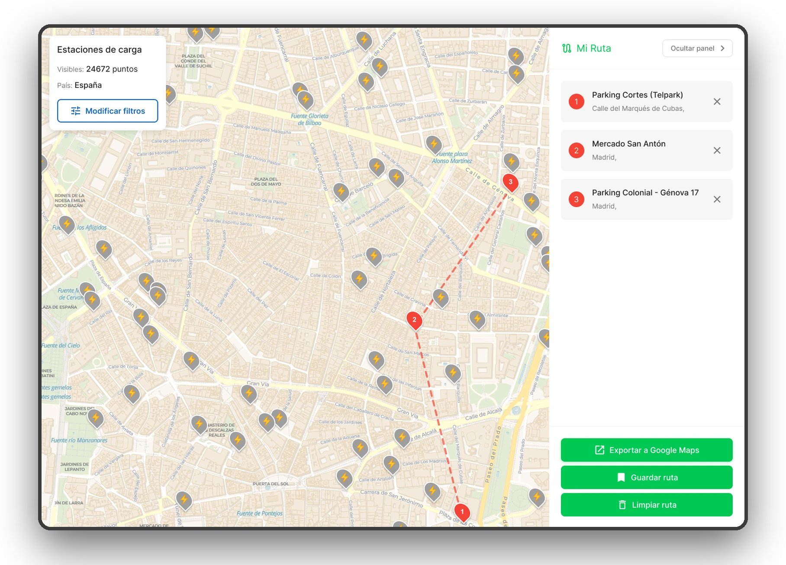
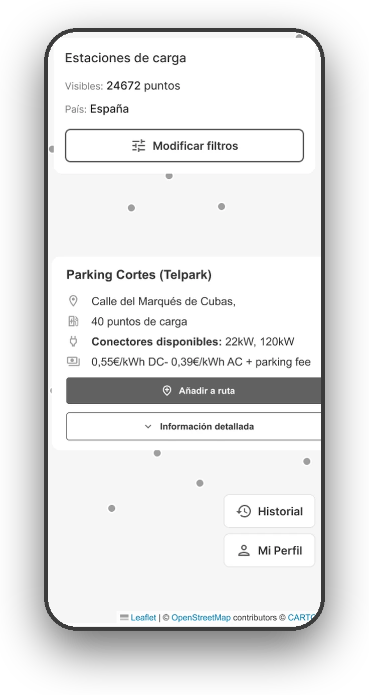
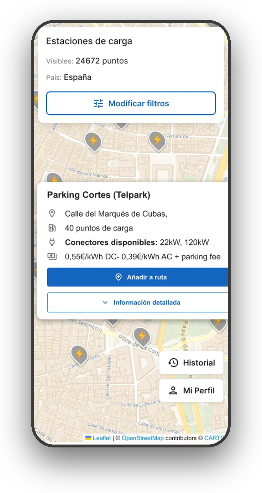

Proyecto 04 · Visualización de datos
Visualización de datos con un mapa interactivo de puntos de carga para vehículos eléctricos. Mediante datos en tiempo real, permite filtrar por país, velocidad de carga, consultar cada estación, planificar una ruta y exportarla a Google Maps.
Aunque ya existen diversas visualizaciones que muestran los puntos de carga disponibles para coches eléctricos, normalmente los datos que utilizan proceden únicamente de las operadoras eléctricas y, en muchos casos, éstos son obtenidos directamente de los usuarios. Además, muchas de ellas están acotadas a sólo ciertos territorios, por lo que no muestran puntos de carga en otros países o regiones. Por último, tampoco suelen dejar filtrar por categorías como el tipo de enchufe, simplemente muestran un mapa con los puntos de carga y las características de cada uno.
El objetivo del proyecto consiste en crear una visualización en la que el usuario pueda interactuar con un mapa mundial y salve muchos de los inconvenientes anteriormente citados que se pueden encontrar en visualizaciones ya existentes. En este mapa, se muestran los puntos de carga con información detallada de cada uno de ellos y, además, se implementan diversas funcionalidades que amplían las posibilidades del mero conjunto de datos tomados como referencia.
Este proyecto está dirigido a conductores actuales y futuros de vehículos eléctricos que necesitan planificar sus rutas considerando la disponibilidad de puntos de carga. También es útil para empresas de logística que gestionan flotas eléctricas, planificadores urbanos interesados en la infraestructura de movilidad sostenible, y cualquier persona que quiera explorar el estado actual de la red de carga para vehículos eléctricos a nivel mundial.
El proceso comenzó analizando diversas plataformas de visualización existentes, identificando sus limitaciones en cuanto a cobertura geográfica y funcionalidades de filtrado. Evalué herramientas como Flourish, que resultaron insuficientes al no permitir geolocalización precisa de puntos individuales. Investigué el dataset de 10.000 estaciones de carga, comprendiendo su estructura de 14 columnas con información detallada de cada punto. Finalmente, identifiqué la necesidad de convertir el formato CSV original a GeoJSON para hacerlo compatible con bibliotecas de mapas interactivos en JavaScript.
Opté por desarrollar la visualización mediante código HTML y JavaScript puro, aprovechando mis conocimientos de programación para tener libertad creativa total. Implementé Leaflet.js con OpenStreetMap como base cartográfica, proporcionando un mapa mundial detallado y compatible con múltiples dispositivos. Diseñé un sistema de filtrado por países mediante un selector dropdown, permitiendo a los usuarios enfocarse en territorios específicos. Creé un panel informativo en la esquina superior izquierda que muestra estadísticas en tiempo real. Además, desarrollé un sistema de creación de rutas interactivo que calcula distancias entre puntos de carga seleccionados, añadiendo valor práctico más allá del dataset original.
El mayor desafío fue implementar el cálculo preciso de distancias entre puntos de carga, lo que requirió utilizar la Fórmula de Haversine (o fórmula del semiverseno) que calcula distancias considerando la curvatura de la Tierra. Otro reto significativo fue la conversión del dataset de formato CSV a GeoJSON, asegurando que las coordenadas geoespaciales se interpretaran correctamente. La gestión de 10.000 puntos de datos en el mapa requirió optimización del rendimiento para mantener la interactividad fluida. Finalmente, desarrollar múltiples funciones JavaScript personalizadas (initMap, loadStations, calculateDistance, updateRoute, etc.) demandó extensa investigación y testeo para garantizar su correcto funcionamiento.
Todo el recorrido de la app se planificó y diseñó en Figma: de la arquitectura de información al prototipo interactivo.
El proceso partió de un mapa con una única pantalla sobre la que se abren capas y de los flujos de usuario principales: encontrar una estación, planificar y exportar una ruta, guardarla y configurar el perfil. Con esa base se dibujaron wireframes de baja fidelidad y se construyó un design system con variables de color, espaciado y radios, estilos tipográficos y componentes con variantes.
Por último, el prototipo conecta los filtros, los popups, la creación y edición de la ruta, el historial y el perfil de vehículos, incluidos los avisos del navegador. El resultado es un diseño responsive para escritorio y móvil.




Las estaciones se agrupan en clusters y, al acercarse, se separan en marcadores individuales sobre el mapa base.
Paradas numeradas que se pueden quitar una a una. La ruta se dibuja en el mapa y se exporta a Google Maps, se guarda o se elimina.
Filtro por países y velocidades de carga.
Perfil personalizado: se pueden agregar vehículos con sus autonomías y establecer una velocidad de carga preferida.
Una sola página con estructura semántica: mapa, tarjeta de estaciones, panel lateral y modales. Variables CSS de color, espaciado, radios y media queries para adaptar la interfaz al móvil.
Módulos independientes (filtros, mapa, ruta, historial y perfil) que gestionan los marcadores (Leaflet.js y markercluster), la exportación a Google Maps y el guardado de rutas y vehículos en almacenamiento local.
Mapa de la app y flujos de usuario, wireframes de baja fidelidad y un prototipo interactivo en Figma con todas las pantallas y estados, en versiones desktop y móvil.
Datos en tiempo real de Open Charge Map: estaciones, conectores, potencias y costes por país, con una caché local que acelera las cargas siguientes.
Siguiente proyecto
Rediseño de la App de Renfe